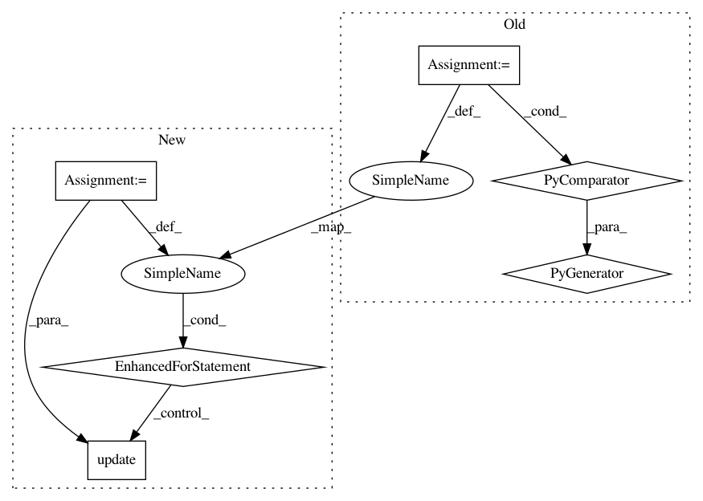

52c7c260e7c0a85e6b051af48b46e8fe9493b117,src/python/pants/core/util_rules/determine_source_files.py,,determine_all_source_files,#Any#,95
Before Change
enable_codegen=request.enable_codegen,
),
)
for sources_field in request.sources_fields
)
digests_to_merge = tuple(
stripped_snapshot.snapshot.digest for stripped_snapshot in stripped_snapshots
)
else:
all_hydrated_sources = await MultiGet(
After Change
for sources_field in request.sources_fields
)
for hydrated_sources, sources_field in zip(all_hydrated_sources, request.sources_fields):
if isinstance(sources_field, FilesSources):
unrooted_files.update(hydrated_sources.snapshot.files)
digests_to_merge = tuple(
hydrated_sources.snapshot.digest for hydrated_sources in all_hydrated_sources
)
result = await Get(Snapshot, MergeDigests(digests_to_merge))
In pattern: SUPERPATTERN
Frequency: 4
Non-data size: 6
Instances
Project Name: pantsbuild/pants
Commit Name: 52c7c260e7c0a85e6b051af48b46e8fe9493b117
Time: 2020-08-04
Author: benjyw@gmail.com
File Name: src/python/pants/core/util_rules/determine_source_files.py
Class Name:
Method Name: determine_all_source_files
Project Name: pantsbuild/pants
Commit Name: b4eb76c08f9e613275f4b6bba4d32c8cc1224cdc
Time: 2021-03-23
Author: 14852634+Eric-Arellano@users.noreply.github.com
File Name: src/python/pants/backend/python/dependency_inference/rules.py
Class Name:
Method Name: infer_python_dependencies_via_imports
Project Name: masa-su/pixyz
Commit Name: a0021cb982c25923a75cd3a1eeaee00058f2cdbb
Time: 2020-07-27
Author: kaneko@weblab.t.u-tokyo.ac.jp
File Name: pixyz/distributions/distributions.py
Class Name: DistGraph
Method Name: sample
Project Name: OpenNMT/OpenNMT-tf
Commit Name: 3fb9f4a6bcb887f459f8e229cc4af6d3cc2b3fd1
Time: 2019-09-30
Author: guillaume.klein@systrangroup.com
File Name: opennmt/evaluation.py
Class Name: Evaluator
Method Name: __init__